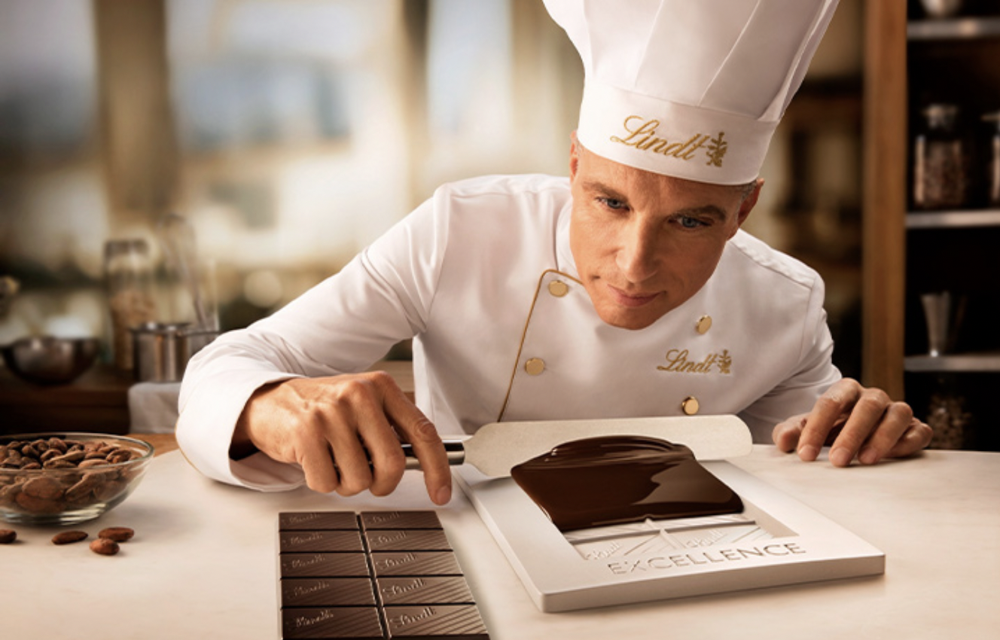

1800-e годы Первооткрыватели шоколада Всё началось с открытия небольшой кондитерской Давида Шпрюнгли в Цюрихе. Бизнес быстро рос благодаря его предпринимательской жилке и энтузиазму.
Вскоре имя Шпрюнгли стало авторитетным среди производителей шоколада.
1845 год: Первые успехи В маленькой кондитерской на Марктгассе в старом районе Цюриха Давид Шпрюнгли и его сын Рудольф Шпрюнгли-Амман впервые создали цельный кусок шоколада в немецкоязычной части Швейцарии. Эта шоколадная плитка мгновенно стала популярной.
1847 год: Первая шоколадная фабрика Шпрюнгли стремительно развивался. В 1847 году он открыл фабрику Schleifetobel в Хоргене. Когда началось производство, запах шоколада так и витал в воздухе!
1859 год: Новая кондитерская Давид Шпрюнгли и его сын открыли вторую кондитерскую на Парадеплатц : знаменитую и по сей день кондитерскую Confiserie Sprüngli. Ее элегантный интерьер быстро завоевал любовь местных жителей, что сделало кондитерскую популярным местом для встреч.
1899 год: Рождение Lindt & Sprüngli. Идеальное партнерство.
Когда Линдт в 1879 году открыл процесс конширования, который прославит Швейцарию как ведущего производителя шоколада, Шпрюнгли это заинтересовало. Он увидел в Линдте коллегу, знатока шоколада.
Два предпринимателя встретились лишь в 1899 году. Иоганн Рудольф Шпрюнгли только завершал строительство более крупной фабрики в Кильхберг-Бендликон в целях увеличения производства, там сейчас располагается главный офис. В Берне же высокий спрос на нежный и тающий шоколад Рудольфа Линдта начинал превышать мощности небольшого и устаревшего производственного оборудования Линдта.
Поэтому когда Иоганн Рудольф Шпрюнгли предложил купить компанию за впечатляющую сумму в 1,5 миллиона золотых франков вместе с брендом Lindt и секретным рецептом, Линдт принял предложение при условии, что за ним останется право голоса. Идеальному партнерству было положено начало, оно продолжалось до тех пор, пока Шпрюнгли не начал полностью управлять бизнесом.
Шоколад является натуральным продуктом, и основным ингредиентом в большинстве продукции Lindt является какао. Содержание жирных кислот в какао-бобах зависит от различных факторов, в том числе от климатических и географических условий произрастания. Поэтому какао-бобы из разных партий имеют разный химический состав, в том числе и состав жирных кислот. Таким образом, различия в содержании жирных кислот в разных образцах шоколада, произведенных по одинаковой рецептуре, возможны в связи с разным химическим составом основного сырья (какао-бобов), обусловленным природными факторами. Они не влияют на вкус или качество конечного продукта.
Несколько независимых исследований, проведенных всемирно известными аудиторами и российскими авторитетными исследовательскими институтами, подтвердили нашу позицию российским государственным органам, в связи с чем ФАС приняла решение о прекращении рассмотрения антимонопольного дела против Lindt & Sprüngli.
Lindt & Sprüngli стремится обеспечить российских потребителей продуктами высочайшего качества. Мы также рады сообщить, что шоколадные плитки Lindt EXCELLENCE получили 5 золотых медалей конкурса "Гарантия качества 2020", организованного Федеральным научно-исследовательским центром пищевых систем имени В. Горбатова при поддержке Совета Федерации. Это очередное свидетельство нашей приверженности высокому качеству и вкусовым характеристикам наших продуктов, заданным высочайшими стандартами марки Lindt, которую любят во всем мире вот уже 175 лет.
Отдел продаж
Метро Шоколатье
| Год | Количество продаж |
| 2018 | 1250 |
| 2019 | 3000 |
| 2020 | 3000 |
| 2021 | 4000 |
| Всего 10250 | |
| № | Наименование | Цена |
|---|---|---|
| 1 | Lindor Молочное сердце 160г | 15 евро |
| 2 | Lindor Кубника & Сливки 200г | 12 евро |
| 3 | Шоколадный зайчик сердце 200г | 2,5евро |
| 4 | Мини Пралине Весна XL 180г | 15 евро |
У Вас есть вопросы? Свяжитесь с нами по телефону или напишите нам на адрес электронной почты, указанной ниже.
Телефон: +7 (800) 302-61-49
supportlindt@operators.online
Мы с радостью ответим на все Ваши вопросы!
Офис Lindt в России
ООО "Линдт унд Шпрюнгли (Раша)" Чистопрудный бульвар, д. 17, стр. 1, этаж 6, помещение 18, 101000 Москва. ОГРН: 1127747199744 Россия